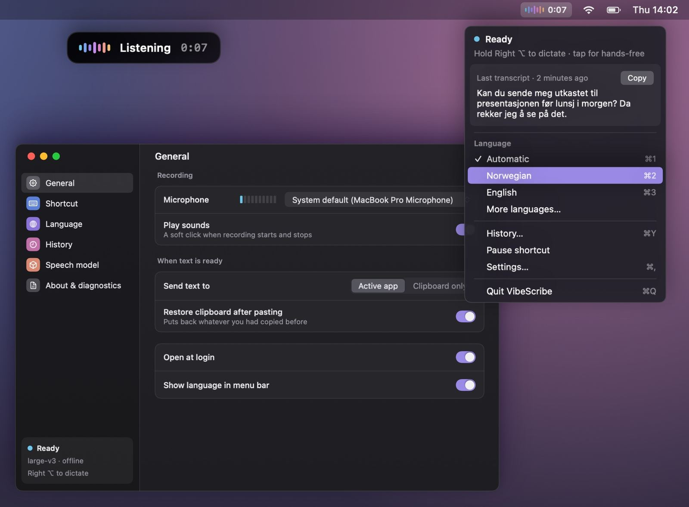
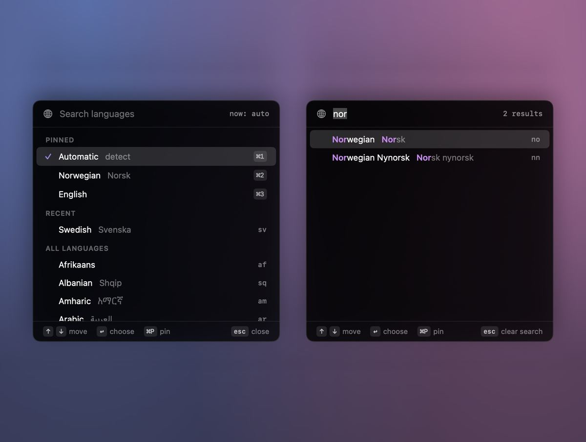
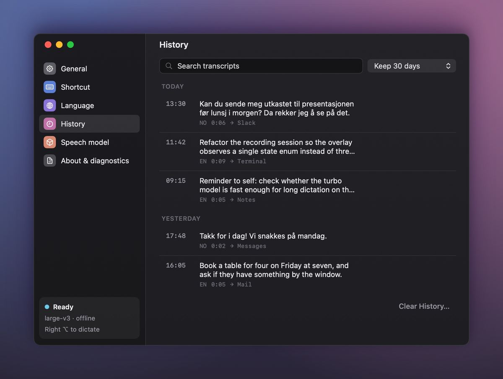
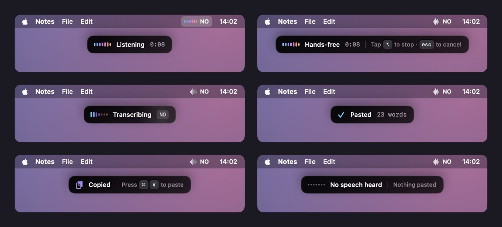
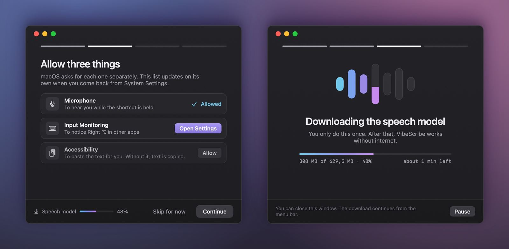

Private by design
Whisper runs on your Mac’s own chip. Your audio is never saved or uploaded, and there is nothing to sign up for.
- No account
- No analytics
- No ads
- No tracking
On-device dictation for Mac
Hold a key, speak, and let go. VibeScribe turns your voice into text with Whisper running right on your Mac, then pastes it wherever you’re typing. No account, no subscription, and your voice never leaves your Mac.
Free, no in-app purchasesmacOS 14 or laterApple silicon

How it works
VibeScribe lives in your menu bar and stays out of the way until you need it.
Hold the Right Option key in any app. Prefer a different key? Set your own shortcut in Settings.
A small overlay shows that VibeScribe is listening. Talk the way you would to a person.
Whisper transcribes on your Mac and the text appears where your cursor is.
⌥ Tap instead of holding for hands-free, and tap again to stop.
esc Cancels a recording without pasting.
Features
Whisper runs on your Mac’s own chip. Your audio is never saved or uploaded, and there is nothing to sign up for.
Mail, Notes, your code editor, a form in your browser: if there is a text cursor, your words go there.
Without the Accessibility permission, the text is copied to the clipboard instead, ready for ⌘V.
Leave it on automatic, or pick a language in a quick picker (⌥⇧). Search by English or native name, and pin up to three for ⌘1–⌘3.

Find, copy or paste again anything you dictated. Keep it for a day, a week, a month, forever, or not at all. It is stored only on your Mac.

Add names, products and jargon so they are spelled your way.
For longer thoughts, tap the key instead of holding it, then tap again when you are done.
Switch to Whisper large-v3 turbo to transcribe roughly three times faster, with slightly lower accuracy in less common languages.
3×
A small overlay at the top of the screen shows when VibeScribe is listening, transcribing or has pasted your words, and tells you when it heard nothing, so nothing is pasted by accident.

Privacy
Whisper runs locally. Audio is kept in memory only while it is transcribed, then thrown away. It is never saved or uploaded.
History, vocabulary and settings never leave it. Clear your history at any time, or choose not to keep it at all.
The internet is used only to download the speech model from Hugging Face. After that, VibeScribe works without a connection.
Getting started
Allow three things, and VibeScribe downloads its speech model once. The first load prepares the model for your Mac’s chip and takes about a minute.

VibeScribe is free on the Mac App Store, with no in-app purchases and nothing to sign up for.